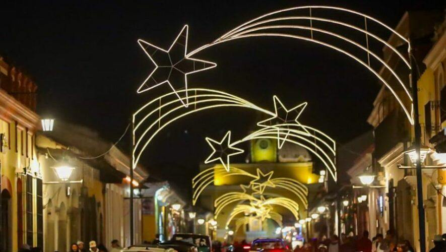

Antigua Guatemala es conocida por sus festividades llenas de tradición, cultura y religión, que atraen a miles de visitantes cada año.
Semana Santa

La celebración más importante es la Semana Santa, considerada una de las más grandes y hermosas del mundo. Las calles se llenan de alfombras y procesiones.
Día de Todos los Santos

Se celebra el 1 de noviembre. Las familias recuerdan a sus seres queridos y preparan el tradicional fiambre.
Navidad

Se celebra con alegría, decoraciones, posadas y comidas tradicionales como tamales y ponche.
Año Nuevo

La ciudad se llena de luces y fuegos artificiales para recibir el nuevo año.
Otras Tradiciones
Antigua Guatemala también celebra ferias, danzas y eventos culturales durante todo el año, mostrando su riqueza cultural.
Estas festividades reflejan la identidad cultural y religiosa de su gente, convirtiendo cada celebración en una experiencia única.